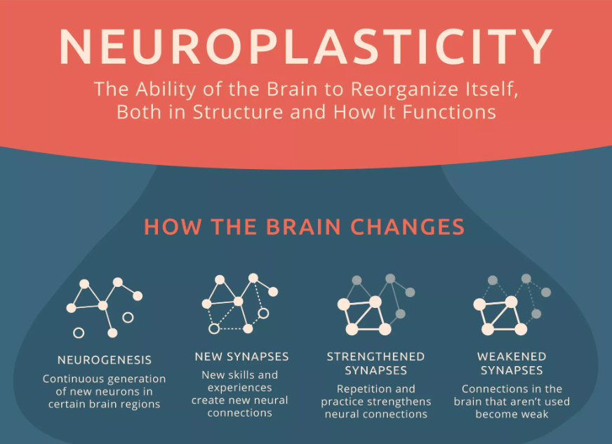
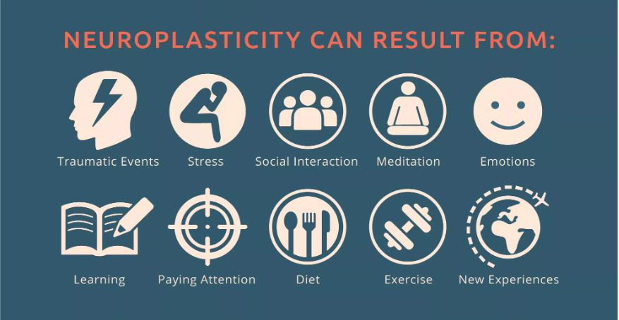
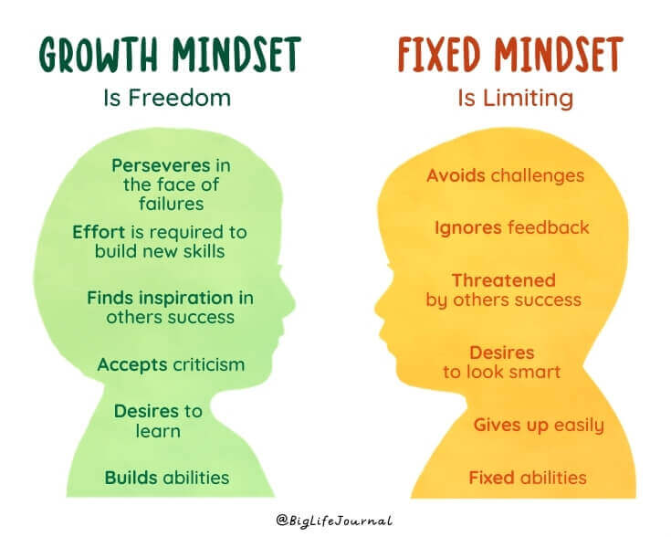

May 05, 2022
-it refers to the brain’s ability to adapt.
a. "Use It or Lose It" "Neural circuits not actively engaged in task performance for an extended period of time begin to degrade." An example of this might be seen in the treatment of a patient who requires g-tube feeding due to an inability to be fed orally. Over time, the circuits responsible for the swallowing mechanism may actually begin to degrade due to lack of use. Subsequently, when that patient is able to begin to swallow again, they may require additional time and trials to re-establish this process as these circuits may be a bit "rusty."
b. "Use It and Improve It" "Training that drives a specific brain function can lead to enhancement of that function." An example of this can be highlighted from the previous discussion of a stroke patient who may have lost use of a particular side of their body and may be neglecting that side or not using it because it is simply too difficult. In the treatment setting, a technique known as constraint-induced movement therapy (CIMT) can be used to restrain the arm on the non-affected side so that the patient is compelled to use their affected limb as much as possible and improve its function.
c. "Specificity" "The nature of the training experience dictates the nature of the plasticity." From a treatment standpoint, specificity highlights the importance of tailoring an activity or exercise to produce a result in specific circuitry. For example, as discussed earlier, physical exercise can be utilized to promote vascular growth, if that is your aim. By the same token, exercises and modalities geared toward enhancing swallowing might also be related to the circuitry involved in producing speech, but may not necessarily generalize to actually producing speech.
d. "Repetition Matters" "Induction of plasticity requires sufficient repetition." One of the challenges for therapists in the rehabilitation environment can often revolve around being able to quantify how much time or how many sessions of specific therapy a patient needs to recover certain skills.
e. "Intensity Matters" "Induction of plasticity requires sufficient intensity." The question of proper therapy intensity follows this concept of repetition as well: " What is the proper dosage of therapy necessary? "How many sessions?" How long should these sessions be?' Research has also shown us that the more intensive the therapy program, the more likely a person is to achieve results and the more likely these changes are to be maintained over time.
f. "Time Matters" "Different forms of plasticity occur at different times during recovery." This principle is based on the idea that after an injury, the brain really wants to recover, so it makes sense that the earlier you provide the opportunity for recovery through these neuroplastic changes, the better. This "early vs. late" approach is especially important to support the beginning treatment before maladaptive behaviors have a chance to spring up.
g. "Salience Matters" "The training experience must be sufficiently salient to induce plasticity." What the person takes away from the training experience and what it means to them can affect their recovery. It is important for the therapist to know what is important to the patient, as emotions can modulate the strength of training or, for example, something like memory consolidation.
h. "Age Matters" "Training-induce plasticity occurs more readily in younger brains." As discussed earlier, younger brains are already more plastic and adaptable to change than older brains, which is important to keep in mind when working with older versus younger patients.
i. "Transference or Generalization" "Plasticity in response to one training experience can enhance acquisition of similar behaviors." In the training process, the therapist needs to have an eye toward how a particular skill or activity can be generalized or transferred to real world activities, such as increased independence in the home environment.
j. "Interference" "Plasticity in response to one training experience can impede acquisition of similar behaviors." When patients are actually able to come in for neurological treatment and that treatment is delayed, they often come in with compensatory behaviors for skill deficits, having already learned a different way of compensating, but which may not be the best way. With this, some of the challenge to learning the best way to regain a skill may involve "unlearning" some of these previously acquired behaviors.
Source: Centre for NeuroSkills
a. Establishing Root Passions And Goals Through Mindfulness - neuroplasticity is vital to brain longevity, and to increase it, the brain needs to be regularly challenged and engaged with new experiences.
b. Cognitive Exercise - Neuroplasticity happens in 2 areas of the brain: the Hippocampus, which operates long-term and spatial memory; and the Cerebellum, which operates coordination and muscle memory. Cognitive exercise includes the likes of learning a language, learning how to play an instrument, following a recipe, or playing an effective brain training game such as the scientifically proven Hawk Eye.
c. Social Contact - The people that surround us outside of work and family participate in our interpersonal skills, emotional management, and experiencing of new activities, and therefore comprise a big proportion of the stimuli absorbed by our brain over time. As a result, choosing the friends we surround ourselves with carefully is important for our brain to stay challenged and engaged in a positive way.
d. Aerobic Exercise - Physical exercise in itself doesn’t cause neuroplasticity, but it does increase blood supply to the Hippocampus, which as was established, is the hub of long-term spatial and long-term memory, which can be increased with neuroplasticity. The general verdict is the more you exercise the easier optimising neuroplasticity should become.
A mindset is an attitude or disposition that determines our responses to and interpretations of particular situations. It is shaped by our beliefs and experiences. Think of mindset as the way we approach and deal with particular situations.
Fixed or growth?
Early research suggested that our mindsets were fixed, which links to the beleifs that our intelligence is also fixed. Recent studies by Carol Dweck and others have shown that mindsets and ability are not fixed. Just as you can build up your physical muscles and become stronger, you can develop your mental ‘muscles’ to become a better learner and thinker. Developing a growth mindset helps you do this.
Dweck’s early research demonstrated multiple potential benefits to encouraging a growth mindset in education. One of her studies showed that praising students’ efforts rather than their intelligence made them more likely to pursue more difficult challenges. Another study demonstrated the influence of simple mindset interventions. Her research showed that students who were taught about developing intelligence went on to perform better in school and exhibit more motivation in the classroom.
Use the word “yet.” Dweck says “not yet” has become one of her favourite phrases. Whenever you see students struggling with a task, just tell them they haven’t mastered it yet.
Learn from other people’s mistakes. It’s not always wise to compare yourself to others, but it is important to realise that humans share the same weaknesses.
Make a new goal for every goal accomplished. You’ll never be done learning. Just because your midterm exam is over doesn’t mean you should stop being interested in a subject. Growth-minded people know how to constantly create new goals to keep themselves stimulated.
Take risks in the company of others. Stop trying to save face all the time and just let yourself goof up now and then. It will make it easier to take risks in the future.
Think realistically about time and effort. It takes time to learn. Don’t expect to master every topic under the sun in one sitting.
Take ownership over your attitude. Once you develop a growth mindset, own it. Acknowledge yourself as someone who possesses a growth mentality and be proud to let it guide you throughout your educational career.
> Back to the Homepage